Browse fitness images. Page 14 of curated fitness-style portrait collection.
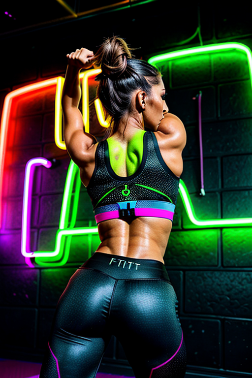 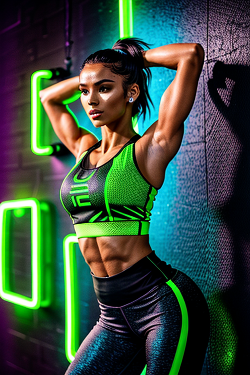 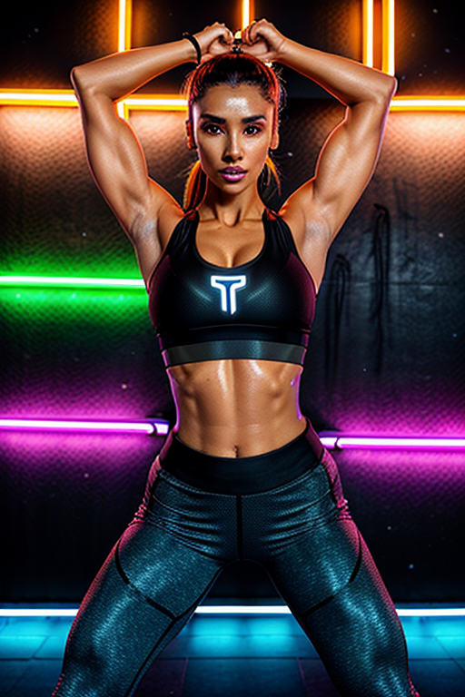 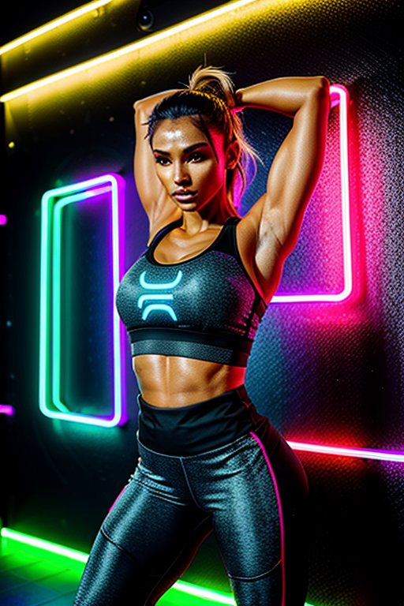 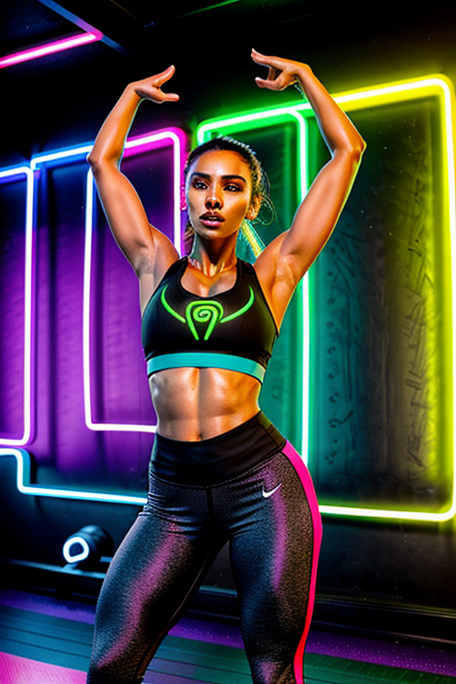 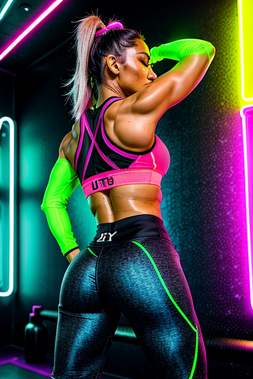 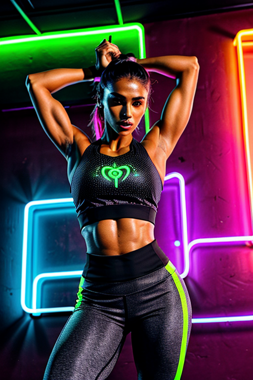 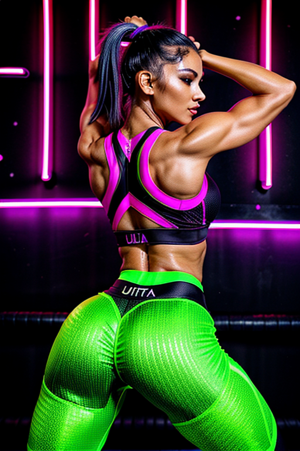 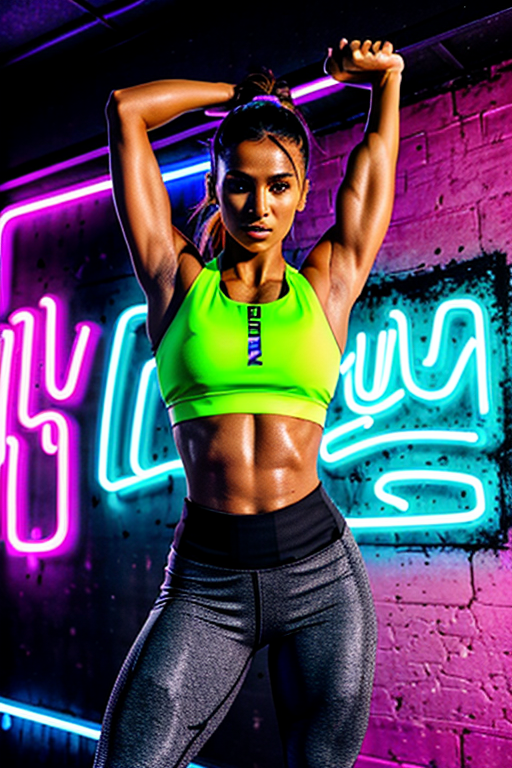
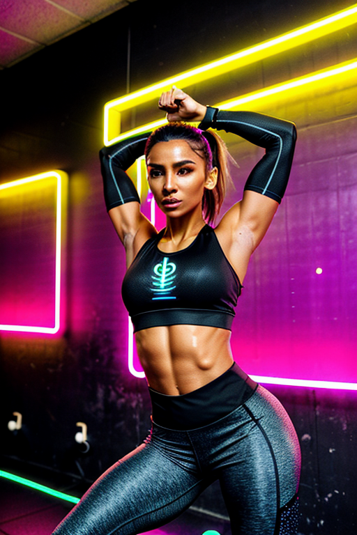
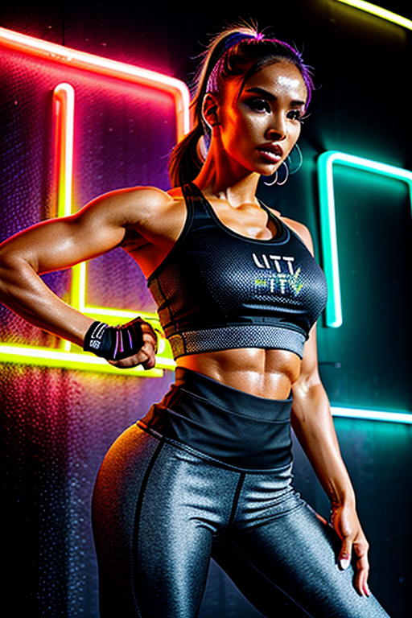
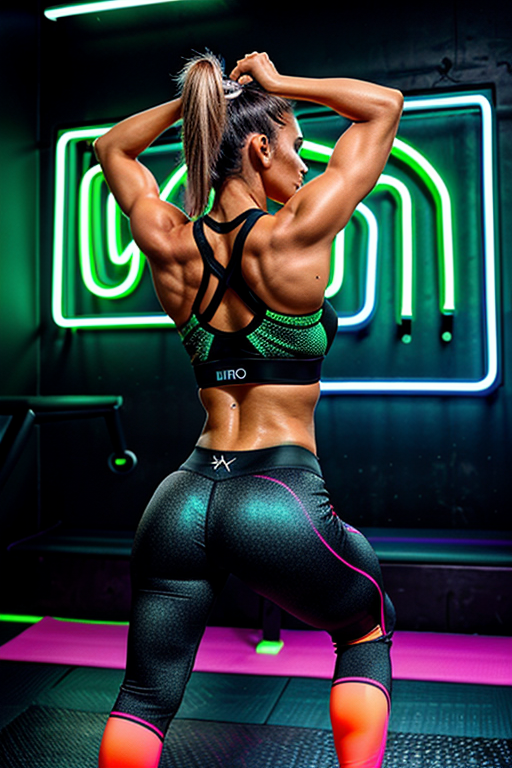
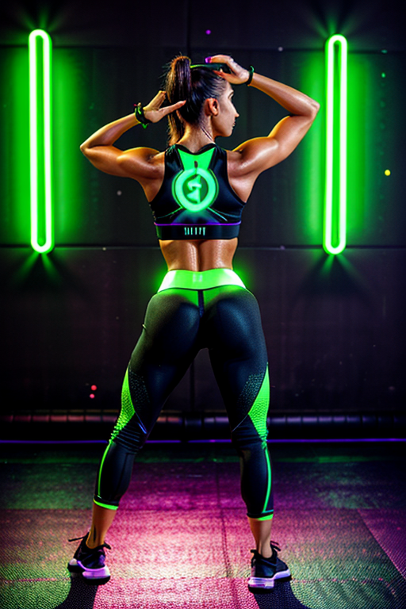
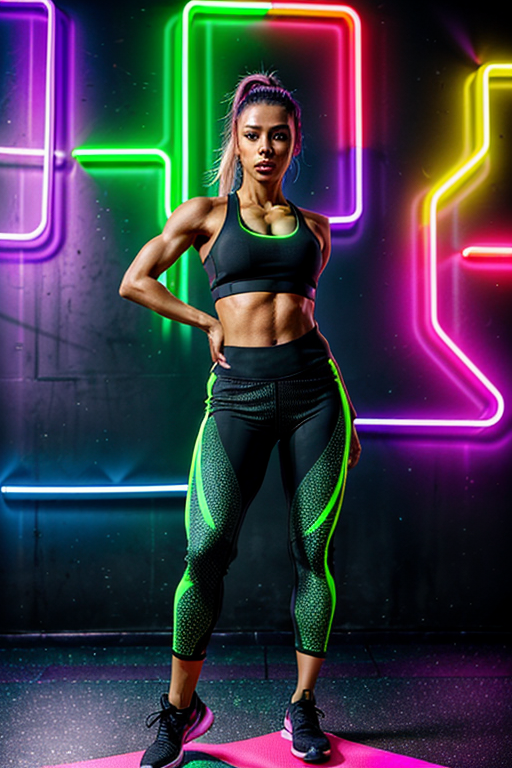
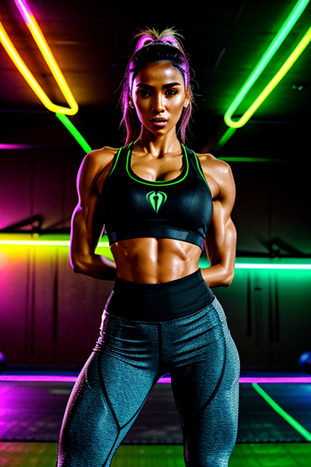
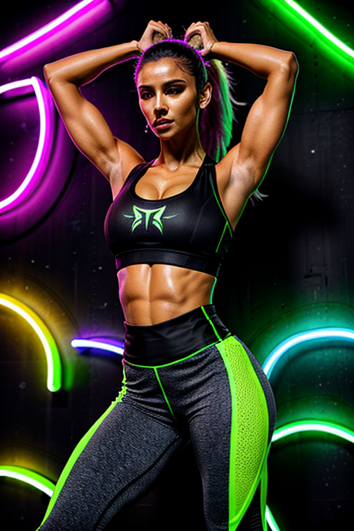
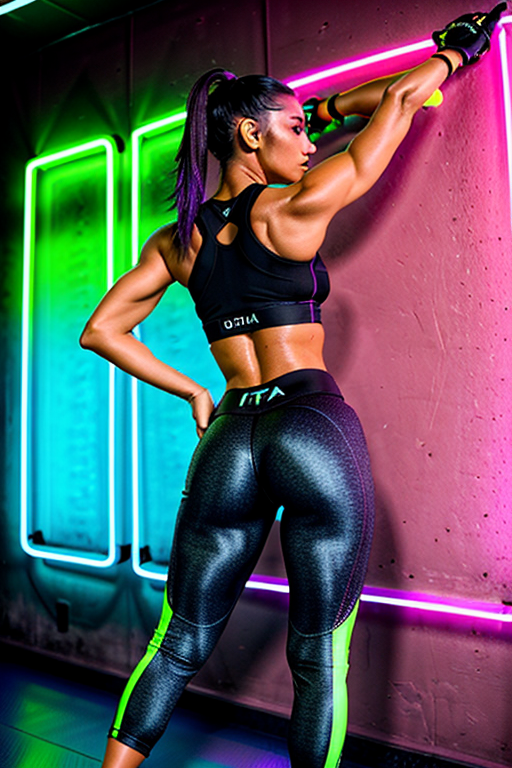
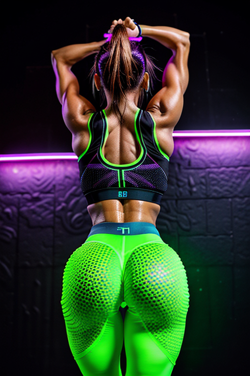
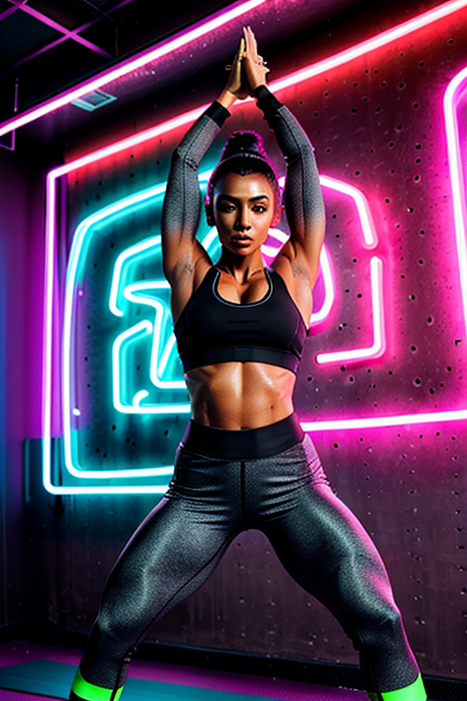
Here we highlight page14, aiming for clean structure, quick scanning, and useful context. The image aims to deliver a straightforward visual impression while keeping the file lightweight. A brief explanation clarifies the subject and lighting so visitors can quickly decide where to go next. Bookmark the page if it’s useful; updates aim to improve clarity, speed, and overall structure over time. The image aims to deliver a straightforward visual impression while keeping the file lightweight. A brief explanation clarifies the subject and lighting so visitors can quickly decide where to go next. For more context, browse related entries linked nearby; each page offers a slightly different angle to limit overlap. Alt text and headings are optimized to make the content accessible and to provide consistent cues across the site. Subtle differences in wording help avoid duplication across similar pages. Bookmark the page if it’s useful; updates aim to improve clarity, speed, and overall structure over time.